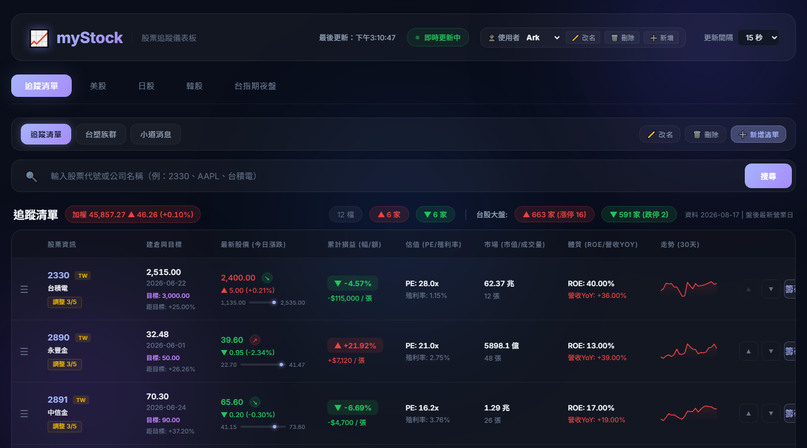
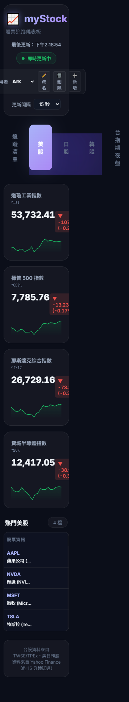
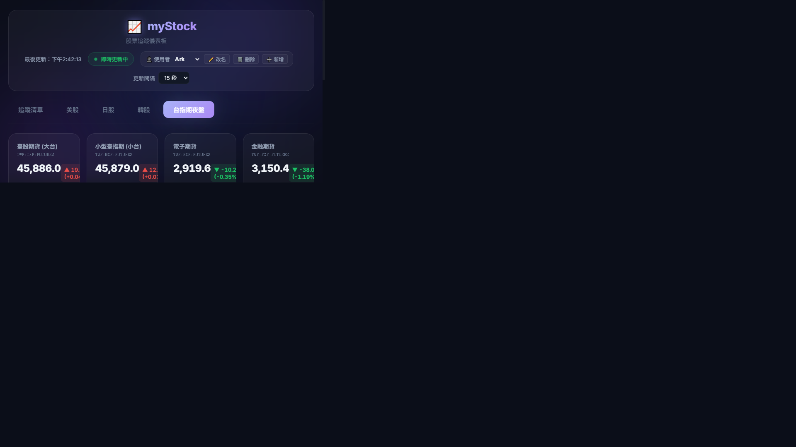

股票追蹤儀表板系統 — 技術簡報
即時股票追蹤儀表板，支援台股、美股、日股、韓股與期貨市場
輸入代號或公司名稱即時搜尋
支援台股代號/名稱 + 美股英文代號
最快每 5 秒自動更新最新股價
台股紅漲綠跌 + 閃爍動畫提示
多清單分類（如：存股族群）
拖放排序 + 建倉日/建倉價記錄
5大指標綜合評分（滿分5分）
均線趨勢/估值/財務安全/Beta
切換不同使用者帳號
每人可擁有獨立追蹤清單
台股 / 美股 / 日股 / 韓股
台指期貨（大台/小台/電子/金融）



| 資料源 | 涵蓋市場 | 抓取方式 | 更新頻率 | 資料內容 |
|---|---|---|---|---|
| TWSE MIS API mis.twse.com.tw |
台股上市/上櫃 | HTTP GET 多個股整併為 1 次請求 |
每 60 秒 前端顯示 5~60s 刷新 |
即時成交價、昨收價 最佳買價、成交量 |
| Yahoo Finance yfinance Python SDK |
美股 / 日股 / 韓股 | yf.Tickers() 批次查詢 fast_info 輕量介面 |
每 60 秒（價格） 每 24 小時（基本面） |
股價、52週高低、MA50/200 PE、殖利率、Beta、ROE |
| 鉅亨網 CNYES API ws.api.cnyes.com |
台指期貨 | HTTP GET 每支期貨 1 次請求 |
每 60 秒 | 期指即時價、昨收 52週高低、成交量、走勢圖 |
| twstock 套件 本地 Python 套件 |
台股 | Fallback 備援 歷史日線資料 |
僅在 TWSE API 失敗時 | 盤後收盤價 月線歷史資料 |
| TWSE 大盤資訊 www.twse.com.tw |
台股大盤 | HTML Scraping | 前端每次刷新時抓取 | 加權指數、漲跌家數 漲停/跌停家數 |
yf.Tickers() 批次初始化 + fast_info 輕量查詢，避免觸發 Yahoo 429 錯誤myStock — 零成本全端股票追蹤系統
FastAPI + Supabase + Hugging Face Spaces
月維護費：$0 ｜ 全免費架構